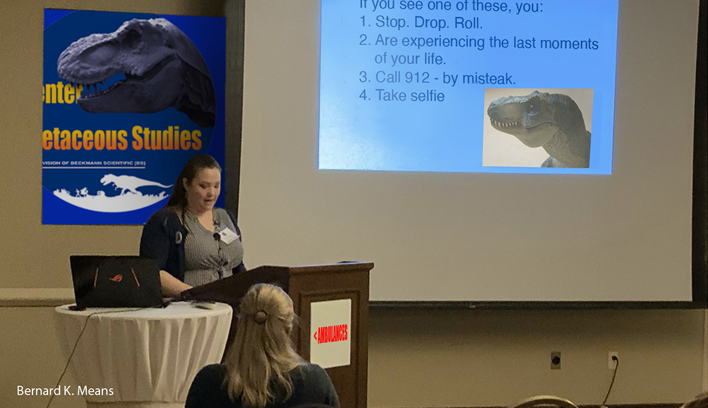

|
|
 |
|
The CENTER
for CRETACEOUS STUDIES
THE WORLD LEADER IN LIVE
DINOSAUR RESEARCH
And All The Crap Associated With Them
| ANNUAL REFRESHER COURSE FOR EMPLOYEES |

|
| No One Usually Lives To Work Here A Full Year |
FOLLOW
THE CENTER FOR CRETACEOUS STUDIES
ON FACEBOOK!
seriously?
why would you want to do THAT?!?
|
| Charter Member of People for the Ethical Treatment of Dinosaurs Since Last Week |
WELCOME to
the Center for Cretaceous Studies [C4CS] LIVE Dinosaur research institution website.
Here at the Center for Cretaceous Studies we often research and sometimes study
the unstudied and unresearched aspects of Dinosaur life, both past and present. That is, when we're not attending the funerals
of those doing that unstudied and unresearched stuff. However, as the ONLY research institute in the world with eating,
biting, living, biting, breathing, biting, carnivorous Dinosaurs from the Cretaceous Period [wait, did we mention biting?], usually* we have live examples just
down the hall, so eh, what do we care if we discover something in fossils or not?
*NOTE: The term "usually" as applied here means, or could mean, there are times [plural] when
perhaps not all the DinoResidents are, y'know, where they should be. [See "DINOALERT!" elsewhere]
Our record is incomparable to any other live Dinosaur research institute on Earth. Not because our "residents" are actually
live, meat-eating Dinosaurs, but mostly because we are the only ones stupid enough to house live, meat-eating Dinosaurs. You're
sure we mentioned that "biting" thing before, right?
Our unofficial motto: "Museums Are Nice, But We Have Them LIVE", remains our unofficial motto to this
day, mostly because we don't want to be sued by Universal Studios or that Spielberg guy. Then again we thought it was slightly
better than our previous motto: "You're Probably Going To Die Here".
Set on a gorgeous college campus-like setting, our Dinosaur research facility would be on the cover of Better Homes & Gardens
if not for the... well, you-know-whats. This research institution, located southwest of Chicago, Illinois, is home to over
158 species* - we think - and probably growing every year, for all we know.
*Note: Most of our DinoCensus volunteers have never returned, so we're kinda guessing
at numbers.
BOOKMARK! BOOKMARK!:
'Bookmark' this
site on your Favorites or Bucket List as company news and information [below] is updated nearly every weekend - or as long
as someone is still around [alive] to write.
You don't want to miss any of the 'adventures'... specially if for some insane reason you actually plan to visit us
some day. Thanks for looking, and we hope to see you here soon!
Proof of life insurance, next of kin contact information, and blood type on separate piece
of paper [in case the original is eaten] are required before admission will be granted.
| CEO DR. BECKMANN RUINS ANOTHER COUPLE DINODIGS |
|
| Over The Years Dr. Beckmann Has Dug Up Many Ounces Of Bones- Some Of Them Belong To Dinosaurs! |
THE WEEK IN REVIEW BUZZ
QUESTIONABLE FACTS, INNUENDO,
HINTS,
ANCIENT NEWS, RUMORS AND GOSSIP...
ok, mostly
just rumors and gossip,
DIRECT FROM tC4CS WATER COOLER
LAST UPDATED 2 APRIL 2022 A.D.
AKA: 66,005,326 YEARS AFTER "THE ANCIENTS" KICKED THE BUCKET
EMPLOYEE GIFTED NEW TRUCK AFTER THEROPODS CRUSH HIS
Supervisor
Vows To Make Him Work Weekends To Pay It Off
Dan Defino is riding in style. Well, used car style.
The 36-year-old Texan survived a harrowing and bizarre ordeal last week, when a visitor's camera inadvertently captured the
moment that a large animal - might have been a dinosaur but we don't know for sure - tipped his Chevy pickup onto its side
then flipped it back onto its wheels, allowing him to drive away to safety.
"It was my first time being being attacked by a dinosaur, and hopefully my last time," he told This Week In Paleontology
[TWIP}.
Defino was on the way home from his third shift Dino Feeder, 7th Class, position, IP116. Rex Allot, IP116 Supervisor and Chevrolet
truck owner, presented Defino with the keys to Allot's old truck.
The truck was severely damaged, that is, Allot's truck, but in somewhat better shape than Defino's. The 1987 Silverado is
worth over $3,000 "to the right buyer" said Allot. "This gives me the chance to go buy a new one."
"When we saw the video, we were all very moved," said fellow IP116 coworker Luke Owt. He and several IP116 employees said
they never laughed so hard.
"You see what happened, and you think about your own truck as that truck is spinning around, so honestly, we were just
really pleased and grateful it wasn't our trucks, and as soon as we recognized that is was Dan's, we immediately went back
to work without him."
Along with the truck, which is worth over $3,000, The Center also gave Defino $15,000 worth of general admission tickets for
his family and friends. Defino immediately said he wouldn't let his family within a mile of this dump.
One of his high school teachers set up a Go Fund Me page to help pay for engine and transmission work, and wrote that "Dan
is a lovely, talented DinoFeeder, making plans to find a better job, or ANY job, next year and could genuinely use some free
mechanical advice from our automotive community and anyone else who may have seen the video of the animal squishing his truck."
Read The REAL Story: Texas teen gifted new Chevrolet pickup after tornado wrecked his
THE CRETACEOUSLAND! LINK (CLICK HERE)!
NO! WAIT!!! CLICK HERE TO RETURN TO C4CS PREVIEW PAGE
CLICK HERE TO RETURN TO TOP OF PAGE
A division of Beckmann Scientific [BS]
| |